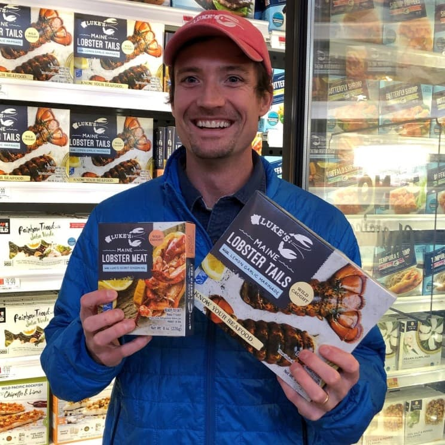

Stirring the (Lobster) Pot — A Podcase with Luke’s Lobster
Discussion Guide
Fishbowl Team Timeline
Starting in Week 3, each student will engage with our weekly case studies in one of three ways:
- A Fishbowl participant
- An Observer
- A weekly submitter of a short written reflection
All students, except the fishbowl team, submit a pre-class reflection every week.
Case Study Assignments
| Week (Date) | Case Study | Fishbowl Team | Observer Team |
|---|---|---|---|
| 3 (9/11) | Jeremy B. Dann et al. (2024). Small Niches, Big Promise | Team A | Team J |
| 4 (9/18) | Thomas Knapp et al. (2019). Chewse | Team B | Team A |
| 5 (9/25) | Shikhar Ghosh, Kristina Maslauskaite. (2016). Dinr | Team C | Team B |
| 6 (10/2) | Andrew Hoffman. (2021). White Oak Pastures | Team D | Team C |
| 7 (10/9) | Lindsay N. Hyde et al. (2022). Sunomi Switchel | Team E | Team D |
| 9 (10/23) | Andrew Hoffman. (2020). JUST, Inc. | Team F | Team E |
| 10 (10/30) | Prashant Salwan, Nilesh Kate. (2024). Nano Ganesh | Team G | Team F |
| 11 (11/6) | Vida J. Morkunas, Kristin Matheson. (2020). Blue Sky Ranch | Team H | Team G |
| 12 (11/13) | George Serafeim, Michael Norris. (2023). Seeds of Innovation | Team I | Team H |
| 13 (11/20) | Simon Parker et al. (2019). Yuser | Team J | Team I |
Fishbowl Team: Expectations
You and your team will lead the in-class case discussion for your assigned week.
This is your chance to take the perspective of an entrepreneur, investor, or analyst—and practice real-time decision-making and communication.
Your responsibilities:
- Read the full case carefully.
- Meet with your team in advance to prepare your analysis.
- Come ready to present: no slides are required, but visuals are welcome.
- Participate fully in the discussion, bringing data, insight, and clear recommendations.
Fishbowl Team: Dress Code
When it’s your turn to be “in the fishbowl,” you are representing your team in front of the whole class. Think of it as a professional discussion panel.
Guidelines:
Aim for business casual — neat, put-together, and appropriate for a professional setting.
No need for suits or formal wear.
Avoid overly casual items (e.g., pajamas, workout clothes).
No hats.
Jeans are fine if paired with a nicer top (collared shirt, blouse, sweater).

Tip: Dress in a way that makes you feel confident and prepared to lead the discussion.
Fishbowl Team: How to Structure Your Discussion
Part 1: Present the Case Overview
- Summarize the case
- Understand the situation (either the core conflict or decision to be made)
Part 2: Identify the Key Players
- Introduce the key players in the story
- Pick out any other players that are important to understand the case
Part 3: Gather and Sort the Evidence
- Review the figures and tables in the case
- Describe what they present
- Look for insights presented by the case characters
- Explain how this evidence might help inform a decision
Part 4: Compare Options
- Engage in a discussion among your group/the class
- Apply concepts from class
- Decide on the criteria to make a decision
Part 5: Make a Recommendation
- Apply the criteria
- Come to a conclusion
This discussion guide is available as a PDF on our course website.
Observer Team: Expectations
Meanwhile, the observer team will be actively participating, but in a different capacity.
Your job is to observe the fishbowl discussion critically and constructively. You will model active listening and provide structured feedback to your peers.
Your responsibilities:
- Submit the weekly pre-class reflection like everyone else.
- During class, take notes on the discussion and complete the observer form:
- 1–2 sentences of praise: What did the group do well?
- 1 question you would have added to the conversation.
- What did you learn from observing?
As an observer, you will submit your responses via the Canvas quiz “Case Study - Observer Feedback Form.”
Let’s see that schedule again!
Locate your case-mates via Canvas under People > Groups.
Case Study Assignments
| Week (Date) | Case Study | Fishbowl Team | Observer Team |
|---|---|---|---|
| 3 (9/11) | Jeremy B. Dann et al. (2024). Small Niches, Big Promise | Team A | Team J |
| 4 (9/18) | Thomas Knapp et al. (2019). Chewse | Team B | Team A |
| 5 (9/25) | Shikhar Ghosh, Kristina Maslauskaite. (2016). Dinr | Team C | Team B |
| 6 (10/2) | Andrew Hoffman. (2021). White Oak Pastures | Team D | Team C |
| 7 (10/9) | Lindsay N. Hyde et al. (2022). Sunomi Switchel | Team E | Team D |
| 9 (10/23) | Andrew Hoffman. (2020). JUST, Inc. | Team F | Team E |
| 10 (10/30) | Prashant Salwan, Nilesh Kate. (2024). Nano Ganesh | Team G | Team F |
| 11 (11/6) | Vida J. Morkunas, Kristin Matheson. (2020). Blue Sky Ranch | Team H | Team G |
| 12 (11/13) | George Serafeim, Michael Norris. (2023). Seeds of Innovation | Team I | Team H |
| 13 (11/20) | Simon Parker et al. (2019). Yuser | Team J | Team I |
Today’s Agenda
- Review Stirring the (Lobster) Pot — A Podcase with Luke’s Lobster.
- Meet with your pods (in-class) and work through the group activity.
Part 1
Case Overview
Summarize the Case
- Luke’s Lobster is a fast-growing restaurant business specializing in sustainably sourced lobster rolls and seafood.
- Founder Luke Holden built the company around quality sourcing, a consistent customer experience, and strong supplier relationships.
- As the business expands, Luke faces decisions on how to grow without compromising values or diluting the brand experience.

Understand the Situation
Ask yourself the following questions:
- What’s going on in this case?
- Why is each detail in the case important?
- Which big-picture themes (e.g., sustainability, brand integrity, growth strategy) are present?
- Are there any contradictions or unexpected points?
Define the core conflict / decision
Should Luke’s Lobster pursue rapid expansion (e.g., scaling like fast casual peers) or focus on slower, values-driven growth that protects authenticity, sustainability, and brand integrity?
Part 2
Identify the Key Players
Key Players
Luke Holden – Founder and CEO
Ben Conniff – Co-founder (marketing partner)
Fishermen/suppliers – Multi-generational relationships, core to sourcing model
Restaurant staff & frontline employees – The “shack” crews delivering customer experience
Customers – Seeking authentic, sustainable seafood experiences
Investors (Quilvest/Jay Takefman) – Expecting returns but aligned with stakeholder philosophy
Other Important Players
- Holden family – Multi-generational lobstering background
“My father was—had the very first lobster processing license in the state of Maine. So I grew up on boats, docks, and processing facilities. So this was in my DNA. The banking was really a departure from what my upbringing was.”
- Whole Foods and distribution partners – Expanding brand visibility
“We’re able to recruit teammates that ultimately see the transparency of our supply chain… and then finding—aligning ourselves with partners like Whole Foods.”
- Community stakeholders – Waterfront redevelopment, sustainability initiatives
“We put a lot of resources into redeveloping the pound, the lobster wharf component of it, so that we revived and attracted some of the best fishermen in Portland… What enabled us to reinvest in the working waterfront and build a sustainable work site for these guys was taking the condo that was at the end of the pier and turning it into a two-story, 150-seat, two-bar, full-menu lobster shack.”
Part 3
Gather and Sort the Evidence
Gather the Evidence
Crew Profiles (Luke’s Lobster Crew) – Shows the diversity and personal connections of staff.
Employee Longevity – Data on how long employees see themselves working at Luke’s, reflecting retention expectations.
Employee Survey Results – High scores on culture (8.75), enjoyment (8.59), inclusiveness (7.95), and willingness to recommend Luke’s as a workplace (8.04).
Food Source Transparency – Vertically integrated, traceable supply chain; strong sustainability commitments.
Company Purpose – Clear mission centered on serving sustainable seafood, treating people right, and building stakeholder value.
Sort the Evidence
The evidence from the case can be grouped into several categories that highlight different aspects of Luke’s Lobster’s operations and strategy:
Employee culture: high survey scores, strong engagement, longevity data (1, 2, 3, 5)
Supply chain practices: direct sourcing, sustainable certification, vertical integration (4, 5)
Customer focus: brand authenticity, consistent “shack” experience (1, 3, 5)
Investor relations: unique private equity partner aligned with stakeholder model (case transcript)
Interpret Exhibits
Core conflict / decision
The core decision in this case is whether Luke’s Lobster should pursue rapid expansion or focus on slower, values-driven growth without compromising authenticity.
When reviewing the exhibits, connect the data directly to that decision:
Employee Longevity (Exhibit 2): Shows how long employees expect to stay, which helps assess turnover risk and workforce stability.
Employee Survey Results (Exhibit 3): High scores on culture and inclusiveness demonstrate cultural strength, which supports scaling.
Crew Profiles (Exhibit 1): Reinforce the personal, authentic culture that differentiates Luke’s from competitors.
Food Source Transparency (Exhibit 4) and Company Purpose (Exhibit 5): Highlight sustainability commitments and mission, showing how Luke’s differentiates itself in the crowded fast-casual space.
Discussion Question: How does each exhibit push you toward one growth path over the other?
Look for Insights from the Case Itself
In the podcase, Luke highlights several important lessons and turning points that inform his strategic decisions:
Expansion mistakes (2018) show danger of over-relying on fast-casual clustering.
Relationships with fishermen are hard to replicate → durable competitive advantage.
Culture and values provide insulation against copycats.
Applying the Evidence
Employee-focused exhibits (1, 2, 3): Suggest that rapid expansion could strain culture and retention, so a measured approach may be safer.
Supply chain & mission exhibits (4, 5): Show that sustainability and authenticity are central differentiators, best protected through values-driven growth rather than fast scaling.
Overall: The evidence leans toward slower, stakeholder-focused growth that protects culture and supply chain integrity while still allowing expansion through careful, mission-aligned channels (e.g., partnerships, grocery products, e-commerce).
How Might This Evidence Inform Your Decision?
Taken together, the exhibits and podcase details point toward strategic considerations that can guide Luke’s next steps:
Strong culture + unique supply chain favor measured, stakeholder-driven growth.
Employee and supplier relationships are fragile if expansion is too rapid.
Investor expectations must be balanced with long-term sustainability.
Part 4
Compare Options
In running a restaurant, why is it necessary to consider what the customer experience should be?
Customer experience in restaurants is directly influenced by the people delivering it — the employees.
It’s not just about food quality, but also about how staff interact with customers, how motivated they are, and how consistent they make the experience feel.
A strong, positive employee culture leads to better service, higher morale, and ultimately more loyal customers.
Ask yourself: How does the way Luke’s treats its employees influence the experience that customers have in the shacks?
Why are relationships valuable in Luke’s business?
Relationships with suppliers, fishermen, employees, customers, and investors form the backbone of Luke’s Lobster’s operations.
If any one of these weakens, the business risks losing trust and stability.
Long-term partnerships ensure reliable supply, motivated employees, satisfied customers, and supportive investors.
Consider: What happens if one link in this chain breaks down?
How might a stakeholder perspective influence the way Luke’s Lobster operates?
Luke’s Lobster follows a stakeholder model, which means weighing the needs of suppliers, staff, customers, community, investors, and even the environment.
This approach requires trade-offs: a decision that benefits investors might put pressure on employees, while prioritizing sustainability could limit short-term profits.
The challenge is balancing multiple, sometimes conflicting, interests while staying true to the company’s purpose.
Apply Course Concepts
What have we learned so far:
- Week 1: Types of Entrepreneurial Ventures
Luke’s Lobster illustrates how an entrepreneur can start with a small, niche concept (a single lobster shack) and grow it into a larger venture that combines multiple models — restaurants, wholesale distribution, and branded grocery products. This helps us think about how different types of ventures can coexist within one business.
- Week 2: The Entrepreneurial Mindset
Luke Holden demonstrates core entrepreneurial characteristics: passion for solving a problem (authentic lobster rolls in NYC), resilience in scaling while protecting values, and stakeholder orientation over short-term profits. His mindset shows how personal background and purpose can drive persistence through challenges.
Decide on the Criteria to Make a Decision
Core conflict / decision
The core decision in this case is whether Luke’s Lobster should pursue rapid expansion or focus on slower, values-driven growth without compromising authenticity.
Based on the company values instilled by Luke, what we recommendation can be guided by the following criteria and questions:
Sustainability & traceability
- Does this option maintain or strengthen the company’s commitment to sustainable, traceable sourcing?
Authenticity of product and experience
- Will the customer experience remain authentic and true to the brand?
Treating people well
- How will this decision affect employees, customers, and suppliers?
Long-term community impact
- Does this path support positive outcomes for the community and industry over time?
Balanced profitability
- Can the company remain financially viable while staying true to its mission?
Part 5
Make a Recommendation
Apply the Criteria
Core conflict / decision
The core decision in this case is whether Luke’s Lobster should pursue rapid expansion or focus on slower, values-driven growth without compromising authenticity.
Now, let’s apply the criteria to make a well-informed recommendation:
☐ Yes ☐ No — Does this option maintain or strengthen the company’s commitment to sustainable, traceable sourcing?
☐ Yes ☐ No — Will the customer experience remain authentic and true to the brand?
☐ Yes ☐ No — How will this decision affect employees, customers, and suppliers?
☐ Yes ☐ No — Does this path support positive outcomes for the community and industry over time?
☐ Yes ☐ No — Can the company remain financially viable while staying true to its mission?
Reach a Conclusion
Likely recommendation:
Prioritize measured expansion that aligns with values.
Explore new channels (wholesale, branded grocery, e-commerce) instead of solely more “shacks.”
Maintain investor alignment by demonstrating long-term profitability through stakeholder-driven practices.
Wrap-Up & Key Takeaways
- Balancing growth with brand integrity requires careful trade-offs.
- Strong stakeholder relationships are a competitive advantage, not just “nice to have.”
- Consistency in customer experience is critical to sustaining loyalty and brand reputation.
- Strategic growth decisions should align with both values and market opportunities.
From Listener to Producer
Podcast Project
In Luke’s story, notice how much came through in the interview format — we got insights about his background, values, and decisions in his own words.
That’s the power of a good podcast: the conversation draws out details that don’t show up in a report or article.
Now it’s your turn to think like interviewers and producers.
Pod Activity 2-1: Get to Know Your Pod
1. Sort yourselves into your pod groups.
2. Introductions
- Meet your pod members.
- Each person share your name and one word you would use to describe yourself.
3. Brainstorming
- Discuss: What makes a great podcast interview?
- Give examples from podcasts you listen to.
- Think about the types of questions asked, good follow-ups, and the demeanor of the host (e.g., curiosity, professionalism, etc.).
4. Logistics
- Decide: Do you want to meet your mentor in person or virtually?
- Decide: How do you want to communicate with your group? GroupMe, WhatsApp, Email, etc.
- Agree on what format feels best for your group.
5. Roles
- Review the pod roles (Pre-Production, Production, In-Session Support, Post-Production).
- Discuss who is interested in which role.
6. Pod Identity
- Every good podcast needs a name!
- Brainstorm one possible name for our class podcast.
What’s Next?
- Meet with your mentor & pod.
- Identify (via Canvas) what date your fishbowl team will be leading the in-class case study discussion.
- Have fun interacting with the course material in these new and different ways!